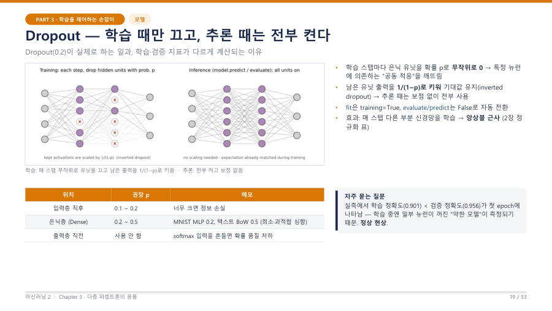

Dropout 동작 — 학습 때만 끄고 추론 때는 모두 켜요 ★★
Dropout은 7장에서 정규화 기법으로 만났어요. 이번에는 "어느 때 켜지고 꺼지는가"를 봐요. 시험에는 로그에서 보이는 이상한 숫자를 Dropout으로 설명하는 문제가 나와요. 교수님도 "이건 조금 어려운 문제로 나온다"고 했어요.
- 학습할 때 — step마다 은닉 뉴런을 확률 p로 무작위로 0(끔)으로 만들어요. 특정 뉴런에 의존하는 습관을 깨요.
- 꺼지지 않은 뉴런의 출력은 1/(1−p)배로 키워서 전체 합의 기대값을 맞춰요(inverted dropout). 그래서 추론 때는 보정 없이 그냥 다 써요.
- 추론할 때 (
evaluate,predict) — 모든 뉴런을 켜요. Keras가fit은 학습 모드,evaluate·predict는 추론 모드로 자동 전환해요. - Dropout은 파라미터를 버리는 것이 아니에요. 껐다 켰다 할 뿐이라 학습할 파라미터는 0개예요.

왜 첫 epoch에서 학습 정확도 < 검증 정확도가 나올까요? 실제 로그에서 첫 epoch의 학습 정확도는 0.901인데 검증 정확도는 0.956이었어요. 이상해 보이지만 정상이에요.
- 학습 정확도는 일부 뉴런이 꺼진 "약한 모델"로 잰 값이에요.
- 검증 정확도는 모든 뉴런을 켠 "온전한 모델"로 잰 값이에요.
- (참고) 학습 지표는 epoch이 진행되는 동안의 평균이라서, 아직 덜 배운 초반 값이 섞이는 것도 한 이유예요.
그래서 학습 초반에는 검증이 학습보다 높게 나올 수 있고, 과적합이 심해지면 결국 학습이 위로 올라가요. 교수님은 "에포크 7쯤에서 학습 곡선이 올라가 과적합이 되기 전 초반에는 학습보다 검증이 더 높을 수도 있다"고 설명했어요.
평소 연습은 한 손을 묶고(일부 뉴런을 끄고) 해요. 그러면 연습 점수가 낮게 나와요. 실전(검증·추론)에서는 두 손을 다 써서 점수가 더 잘 나와요. 연습이 어려운 만큼 실전에서 안정적이고, 한 손에만 의존하는 버릇이 안 생겨요.
| 위치 | 권장 p | 메모 |
|---|---|---|
| 입력층 바로 뒤 | 0.1 ~ 0.2 | 너무 크면 입력 정보가 사라져 손실이 뒤 층으로 크게 번져요. |
| 은닉층(Dense) | 0.2 ~ 0.5 | MNIST MLP는 0.2, 텍스트 단어 벡터(Bag-of-Words)처럼 희소하고 과적합이 심한 경우는 0.5 |
| 출력층 바로 앞 | 사용 안 함 | softmax 입력을 흔들면 확률의 품질이 나빠져요. |
Dropout은 학습 단계에서만 뉴런을 확률적으로 끄고, evaluate와 predict 같은 추론 단계에서는 모든 뉴런을 사용한다. 첫 epoch에서 학습 정확도가 검증 정확도보다 낮게 나오는 것은 학습 지표는 일부 뉴런이 꺼진 상태로, 검증 지표는 모든 뉴런이 켜진 상태로 측정되기 때문이며 정상적인 현상이다.
잠깐 확인 — Dropout(0.2)을 쓴 모델에서 model.predict를 호출하면 뉴런이 꺼지나요?
꺼지지 않아요. predict는 추론 모드라서 모든 뉴런을 사용해요. 꺼지는 것은 fit(학습) 중뿐이에요.
화면을 가리고 "Dropout 동작 — 학습 때만 끄고 추론 때는 모두 켜요 ★★"을(를) 친구에게 설명하듯 한 문장으로 말해 보세요. 막히면 위의 빨간 칸만 다시 보고 넘어가요.
자료: 6주차 · 머신러닝2_chapter3_redesign.pdf(p.18–28) · 머신러닝06.txt, 머신러닝07.txt(10/19 중간고사 복습)